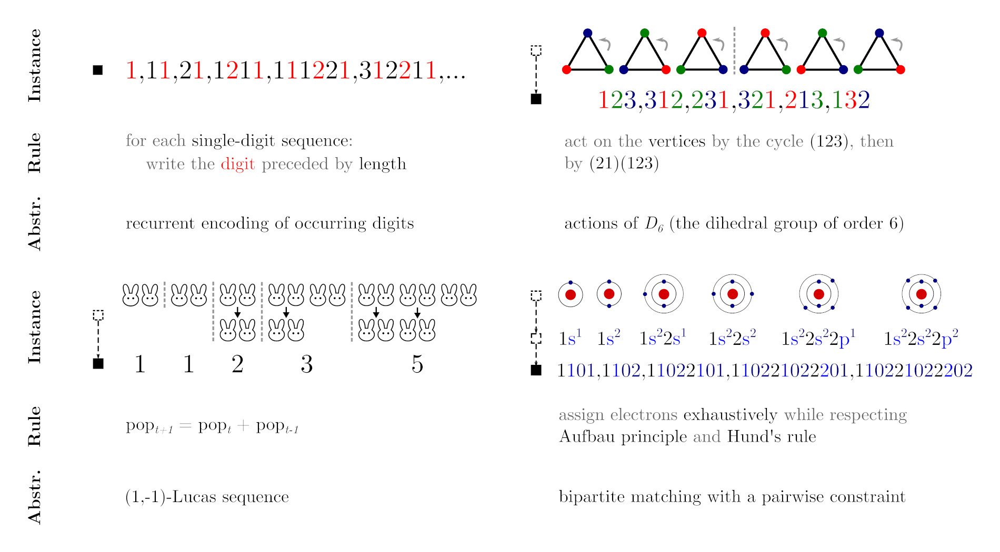

Together with two fellow ETH graduates, we developed a comprehensive knowledge retrieval system for Bank Julius Baer using a BERT Transformer large-language model fine-tuned on internal legal documents. The system enhances employee productivity by enabling quick and efficient access to company information and policies while ensuring compliance. Built with Python and PyTorch, the solution integrates seamlessly into daily workflows. We also constructed an embedding space to optimize document retrieval, allowing the model to provide source citations when delivering information.
Julius BärMy research explores AI’s ability to understand integer sequences and their underlying logic. As part of my bachelor’s thesis, I collaborated with two Ph.D. students from ETH Zurich to develop an enhanced Transformer model that improves AI’s capacity for mathematical and logical reasoning, an area where existing models struggle. Our adapted architecture was designed to learn the abstractions within integer sequences, bridging the gap between language understanding and mathematical reasoning. This work was published at NeurIPS, one of the most esteemed conferences in AI. To support our research, we created a comprehensive benchmark and dataset, along with a full suite of tools for training and testing models on integer sequences.
 Paper CodebaseAs a Research Assistant at ETH Zurich, I advanced research on super-resolution using Implicit Neural Representations (INRs), expanding upon my Master's thesis work. Unlike traditional digital methods that store data in discrete grids with fixed resolutions, INRs model data as continuous functions, allowing sampling at arbitrary resolutions. This approach is particularly well-suited for super-resolution tasks. To further explore its potential, I trained a Vision Transformer model on diverse data modalities, demonstrating the versatility of INRs. Our findings were published at CVPR, one of the leading conferences in AI.
In addition to developing AI projects in Python, I have a strong interest in frontend development with HTML, CSS, and JavaScript. This passion has led to several web design projects, some dating back to my high school years. Notably, I built my own website entirely from scratch using only HTML, CSS, and JavaScript, without any additional design tools.
My first complete web development project was in 2014 for Thurnheer Obst, a small family-owned agricultural company specializing in fresh local fruits. Although I no longer maintain the site, it marked my introduction to web design. I later contributed to the web design for airlinetools, a company that developed a sophisticated web-based Airbus A320 simulator built by professional pilots.
Most recently, I designed and currently maintain the website for Avanox AI, an AI startup where I am also a co-founder. At Avanox AI, we simplify AI-driven automation for businesses of all sizes.
I have a strong passion for cryptography, blockchain technology, and cryptocurrencies. My interest in distributed computation was sparked by multiple courses with Prof. Dr. Wattenhofer, whose expertise in improving the Bitcoin Lightning Network was both inspiring and influential during my master's studies. As part of this passion, I developed a cryptocurrency trading bot that directly interacts with the Solana and Ethereum blockchains, utilizing Node.js, Rust, and Solidity. Additionally, I invested heavaly in Ethereum mining before its transition to Proof of Stake with Ethereum 2.0.